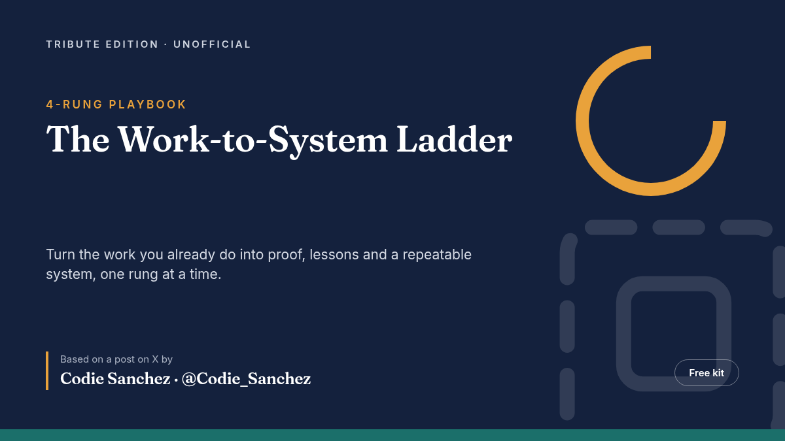

What's inside
- PDF guide (5 pages): the four rungs explained step by step
- Weekly ladder checklist, work log and system card templates
- A worked (fictional) example
- An AI prompt that turns your work log into posts, lessons and an SOP
All credit goes to Codie Sanchez (@Codie_Sanchez)
The idea behind this kit comes from a post by Codie Sanchez on X. This is a free, unofficial expansion of it; all credit for the original insight is hers.
Unofficial tribute, not reviewed or endorsed by the creator. Free, not for sale. Examples are fictional; no outcomes are promised.